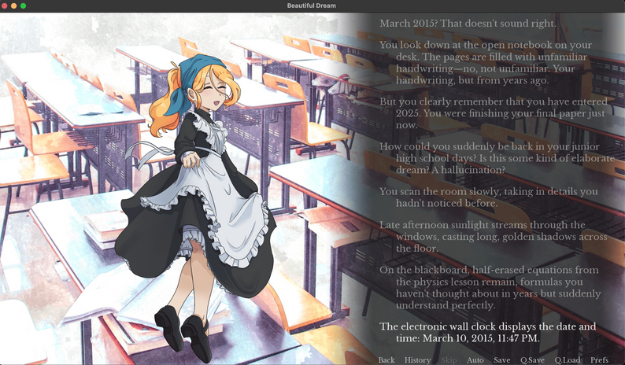
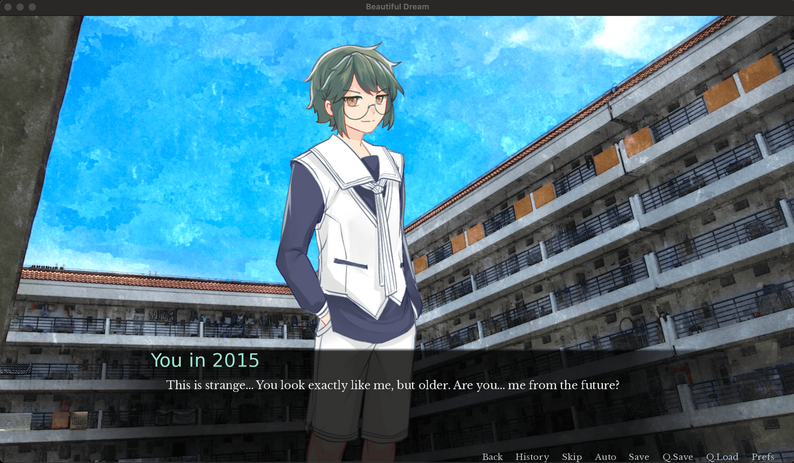

Project Overview
Beautiful Dream is a short, dialogue-driven visual novel written and built solo. The protagonist — a graduate student deep in thesis work in 2025 — suddenly wakes up in her old middle-school classroom on an ordinary afternoon in March 2015. Is it a dream, a parallel universe, or real time travel? The game never answers the question directly; instead, it lets the player sit inside the ambiguity, reconnecting with old classmates Anna and Louis and deciding how much of that lost time is worth revisiting.
Game Screenshots

The protagonist wakes up disoriented in her old classroom, greeted by classmate Anna.

你与年轻的自我对话，思考是现实还是梦境
Narrative Structure: Funnel Branching
For a solo-written short like this, letting every choice fork the script would have blown the writing budget fast. So most early choices are deliberately "flavor" choices — they change the immediate line of dialogue and let the player feel agency, then funnel back into the same downstream scene. Only one choice near the end is a true structural fork with two fully separate endings.
Flavor Choices (Converging)
"Where am I?" / "Who are you?" / "What happened?" all lead to the same next scene with slightly different framing lines. Same pattern repeats for "check the notebook" vs. "look around the room", and "go to campus" vs. "stay in the classroom".
The One Real Fork
After a full afternoon with Anna and Louis, a stranger's voice asks directly: wake up to real 2025, or stay in 2015 a while longer. This is the only choice that leads to two independently written endings.
Design intent: concentrate all writing effort on making the single meaningful choice feel earned — the whole afternoon with Anna and Louis is essentially a long, carefully paced set-up for the one question that matters at the end.
Two Endings, One Mirrored Scene
Both endings share the same device — the protagonist comes face to face with her 15-year-old self — but resolve it in opposite emotional directions.
Wake Up
The protagonist chooses to return to 2025. Her younger self says goodbye and lets her go: "Goodbye, we all move on." She wakes up at her desk — only twenty minutes have passed — and resolves to keep moving forward despite present-day hardship.
Stay in the Past
The protagonist chooses to remain in 2015. This time it's her older self who fades away, wished well by her younger self: "I wish you all the best, bye." She reopens her eyes in math class, no longer bored by it — aware she now carries the chance to take a different path.
"The past is soft and familiar — but you don't belong there anymore. So tell me — will you return, or will you remain?" — the stranger, moments before the final choice
Character Design
With only two recurring characters, each had to carry distinct symbolic weight rather than just filling narrative slots.
| Character | Role | Narrative Function |
|---|---|---|
| Anna | Classmate | Introduced reading Hesse's Demian — a novel about self-discovery. The protagonist calls her "my Demian", casting Anna as a quiet spiritual guide rather than a simple friend. |
| Louis | Best Friend | Carefree and grounded in the present moment ("look at how beautiful the sunset is"). Represents the friendships that quietly drift apart after school ends — the protagonist already knows, mid-scene, that they will lose touch. |
| You (2015) | Younger Self | Appears only in the two endings' closing scenes — a device to externalise the protagonist's internal negotiation between nostalgia and moving forward. |
Production Notes
Built solo in Ren'Py, using CC BY 4.0-licensed music, character sprites, and backgrounds from independent creators, with full attribution credited in-game — a small but deliberate habit of treating third-party assets as a compliance responsibility, not an afterthought.